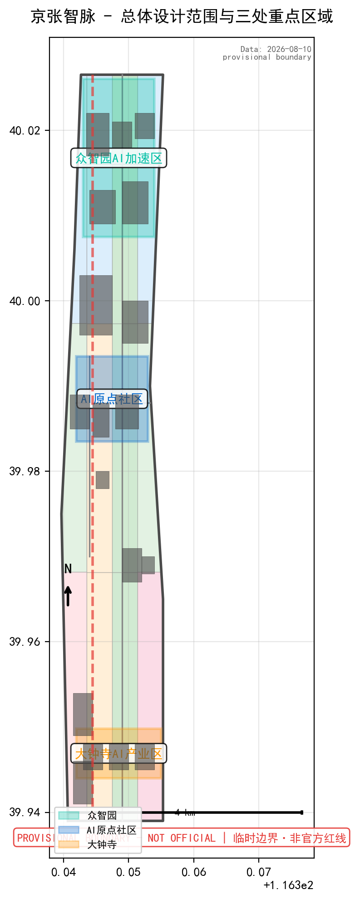
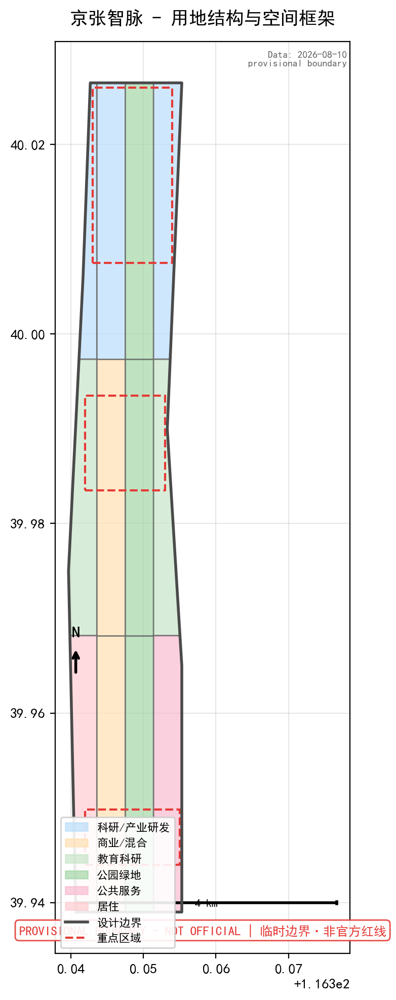
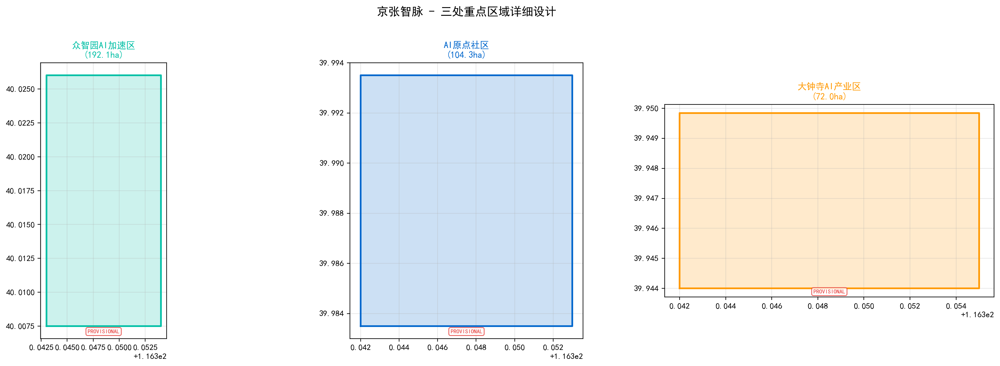
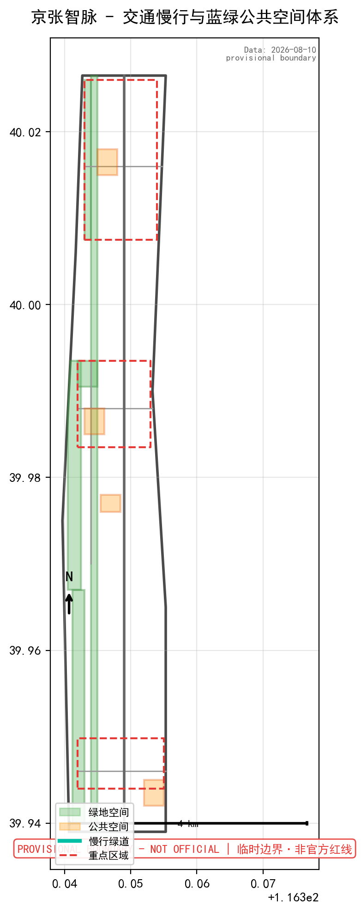
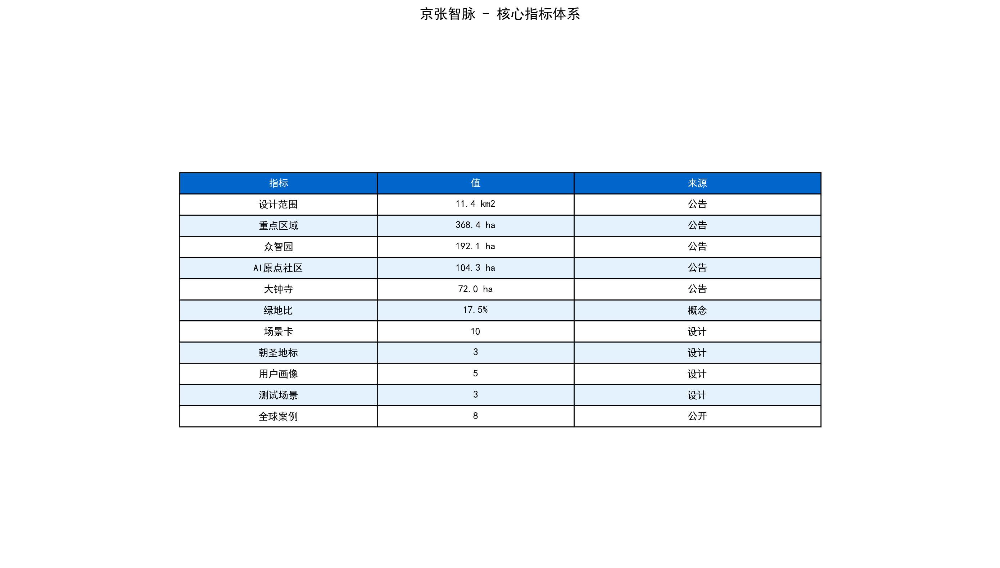

京张AI创新走廊城市设计方案
以"京张智脉"（Jingzhang AI Pulse）为核心概念，沿京张遗址公园构建一条融合百年铁路文化、中关村创新精神与AI新文化的城市创新走廊。方案覆盖43.6km²统筹研究范围、11.4km²总体设计范围及368.4ha三处重点区域，提出"一带三核、多点场景、蓝绿慢行复合环"的空间结构，包含10张AI场景卡、5类用户画像、3个产业测试验证场景、3个AI朝圣地标及年度活动运营体系。方案核心：以"京张智脉"（Jingzhang AI Pulse）为总体概念，命名融合京张铁路文化记忆、AI产业属性与数字脉冲意象。官方边界来源为北京市规自委海淀分局发布的资格预审公告（https://ghzrzyw.beijing.gov.cn/zhengwuxinxi/tzgg/hd/202605/t20260509_4643047.html），官方精确polygon尚未发布，暂用maintainer提供的provisional_boundaries.geojson生成。三处重点区域：众智园AI加速区（192.1ha）定位花园型全栈自主创新街区，强化清河界面；AI原点社区（104.3ha）定位近校型成果转化与人才特区，打通校区-园区-街区慢行；大钟寺AI产业集聚区（72.0ha）定位城市型智能经济与国际交往街区，围绕大钟寺站TOD开发。围绕10张AI场景卡（开源发布厅、安全治理沙盒、端侧算力驿站、AI慢行导航、国际路演客厅、清河低碳创新廊、近校成果转化街、数据要素会客厅、AI生活服务样板街、全球AI活动周路线）、5类用户画像和3个产业测试验证场景，构建"可体验、可运营、可迭代"的AI+城市生活场景体系。
京张AI创新走廊城市设计方案
设计依据与资料清单
本方案以北京市规划和自然资源委员会海淀分局发布的《百年京张AI创新带城市设计国际方案征集资格预审公告》为第一依据，并以 brief/site-package/ 中经维护者登记的临时粗略边界、重点区域、枚举、指标和来源清单为机器可读依据 来源 来源 深度。方案不是独立愿景文本，而是从公告、面向智能体任务书和场地资料出发组织成果；完整来源和标准覆盖分别保存在 sources.json、standard_matrix.json 与 design_depth_matrix.json。
资料登记表的使用边界如下 来源：
data/source_registry.json登记公开、清权与临时资料的用途边界，当前登记 formal 可用资料 5 条，provisional-only 资料 1 条。- agent 不得把 background_only 或 provisional_only 资料升级为 official boundary、法定控规、正式评分依据或政府实施承诺。
本方案使用 brief/site-package/geometry/provisional_boundaries.geojson 生成临时 formal 包。提交包中的 geometry/site_boundary.geojson 与 geometry/key_areas.geojson 均标注为 provisional_constraint、official_boundary=false，只能用于方案生成、自检、可视化和设计讨论，不能作为 official redline、审批依据、精确面积依据或法定控制结论。该组织方数据缺口本身不阻断内容评分；替换 official polygons 后，site boundary、key areas、land use、roads、green space、public space、buildings、phasing 和 metrics 均需重算 空间数据 指标。

三层范围工作框架
方案按照公告确定的三个层次组织工作，三层范围在 compliance_matrix.json 中逐条映射，保证公告 1.3、1.4、1.5 与 agent.1-agent.6 的必选任务都有章节、图层、指标、图纸和 HTML 证据 深度 深度 标准。
| 层级 | 面积 | 边界描述 | 设计问题 | 方案回答 |
|---|---|---|---|---|
| 统筹研究范围 | 43.6 km² | 北至北五环路，东至京藏高速，南至西直门外大街，西至万泉河路 | AI产业生态和未来城市形态如何组织 | 建立"高校策源—开源协作—企业转化—公共体验—国际传播"创新链 |
| 总体设计范围 | 11.4 km² | 京张遗址公园周边1-2公里；北至北五环，东至学院路/西土城路，南至西直门外大街，西至大钟寺东路/荷清路 | 产业空间、城市更新、交通市政和风貌如何落图 | 用地、建筑、道路、绿地、公共空间和分期图层共同表达 |
| 重点区域范围 | 368.4 ha | 自北向南：众智园(192.1ha)、北京AI原点社区(104.3ha)、大钟寺(72.0ha) | 三处片区如何达到详细设计深度 | 分别提出定位、空间动作、AI场景和实施依赖 |
三层工作不是互相割裂的图纸集合。统筹研究决定产业链和城市形态判断，总体设计把判断落实到更新项目、空间结构和设施承载，重点区域详细设计验证具体地块、建筑、交通、公共空间和AI应用场景的可实施性 空间数据。
本方案建议的总体概念为"京张智脉"（Jingzhang AI Pulse）：以京张遗址公园为历史与公共空间主轴，以众智园、北京AI原点社区、大钟寺三处重点片区为创新锚点，以高校、企业、社区和轨道站点为日常网络，形成"一带三核、多点场景、蓝绿慢行复合环"的空间组织。这里的"一带"不是额外画出的新红线，而是把公告中的三层范围转译为工作方法；"三核"对应三处重点区域；"多点场景"对应AI+公共服务、产业服务和城市生活的可运营节点；"复合环"对应慢行、绿地、公共空间和活动路线的联动 来源 标准。

统筹研究范围产业与未来城市研究
总体概念与命名体系
主名称：京张智脉（Jingzhang AI Pulse）。命名逻辑：以"京张"承载百年铁路文化记忆，以"智"锚定AI产业属性，以"脉"同时表达轨道交通的线性基因、城市经脉的连通性以及信息时代的数字脉冲。英文名 "Jingzhang AI Pulse" 兼顾国际传播的简洁性和识别度。
视觉识别与Logo方向：概念建议以京张铁路铁轨的平行线与中国传统"云纹"（象征算力与数据流）融合为基础图形元素，形成"刚柔并济"的视觉符号。平行线代表铁轨与代码行，云纹代表AI的云端算力与数据流动。色彩系统建议采用"轨道灰"（#4A4A4A）+ "创新蓝"（#0066CC）+ "AI脉冲青"（#00BFA5）三色体系，分别对应历史底蕴、中关村创新基因和AI未来感 标准 [agent.1]。
三大定位与五大功能：方案呼应"百年京张文化带、都市AI生活体验带、AI融合创新带"三大定位，对应"AI全栈自主创新体系、世界级AI创新生态、AI+场景赋能新范式、智能化AI活力城市、AI治理全球话语权"五大功能。三区两翼协同回路如下：
| 三区/两翼 | 功能定位 | 协同关系 |
|---|---|---|
| 众智园AI自主创新加速区 | AI全栈自主创新体系 + AI治理全球话语权 | 输出标准、安全治理、全栈技术 |
| 北京AI原点社区 | 世界级AI创新生态 | 成果孵化、开源协作、人才特区 |
| 大钟寺AI产业集聚区 | 智能原生新业态 | 智能经济、内容消费、国际交往 |
| 中关村科技服务翼 | 要素全球化配置 | 资本赋能、IP交易、科技服务 |
| 小月河场景赋能翼 | AI场景赋能 + 智能化活力城市 | 公共体验、测试验证、场景开放 |
全球AI创新生态案例（5-8个）
本方案研究以下全球AI创新生态案例，为一带的空间、产业和运营策略提供参考 [agent.2]：
| 案例 | 地点 | 核心特征 | 对一带的启示 |
|---|---|---|---|
| 硅谷 Sand Hill Road + Stanford Research Park | 美国加州 | 高校策源—风险投资—企业孵化闭环 | 强化清华/北大/北航等高校与产业区的慢行联系和成果转化通道 |
| 伦敦 King's Cross Knowledge Quarter | 英国伦敦 | 城市更新型知识经济区，Google UK总部入驻带动生态 | 以头部企业入驻带动中小企业和公共空间迭代 |
| 新加坡 one-north（纬壹科技城） | 新加坡 | 政府主导的"工作-生活-学习-娱乐"融合园区 | 高密度混合用地+公共空间品质+人才公寓配套 |
| 深圳南山科技园 + 深圳湾科创走廊 | 中国深圳 | 市场化驱动的硬件+软件创新生态 | 产业空间弹性供给、企业服务一站式平台 |
| 首尔 Pangyo Techno Valley | 韩国首尔 | 政府主导的AI/ICT产业集聚，Kakao等总部基地 | 轨道站点一体化开发、公共数据开放测试环境 |
| 杭州城西科创大走廊（未来科技城） | 中国杭州 | 阿里生态溢出+之江实验室+西湖大学创新链 | 龙头企业带动+创新平台共建+场景开放 |
| 巴黎 Station F + 沙蒂永AI园区 | 法国巴黎 | 全球最大创业园区与AI科研集群联动 | 历史建筑活化利用+AI文化事件+国际传播 |
AI创新生态图谱
概念建议建立"一轴三圈五要素"的AI创新生态图谱：
- 一轴：京张遗址公园创新活力轴——串联历史记忆、公共空间、AI展示和慢行体验
- 三圈：高校策源圈（清华/北大/北航/中科院等）、企业转化圈（AI头部企业+独角兽+初创）、场景体验圈（公共空间+社区+商业）
- 五要素：算力（端侧+云端）、数据（开放+合规）、人才（引进+培养）、资本（风险投资+产业基金）、场景（测试+展示+运营）
本概念建议不编造企业名单、投资额或财政承诺，所有产业生态描述均为开放共创建议 来源 [charter.3]。
总体设计范围城市更新与控规深度城市设计
总体空间结构
概念建议总体设计范围形成"一脉三段、四廊多点"的空间结构：
- 一脉：京张遗址公园为南北向核心公共空间脉
- 三段：北段（众智园—清河创新门户）、中段（AI原点社区—学院路智力核心）、南段（大钟寺—城轨枢纽商务区）
- 四廊：东西向四条缝合廊道（清河生态廊、成府路—清华联络廊、知春路—北航联络廊、西直门—大钟寺商务廊）
- 多点：AI场景节点、轨道站点一体化节点、公共空间节点
用地与建筑规模
基于公开资料和公告信息，概念建议总体设计范围内用地以产业研发、教育科研、商业服务和居住混合为主，以京张遗址公园为中央绿带组织两侧功能。建筑规模建议为概念参考值，待正式控规条件确认后校准 标准 空间数据 深度 。
| 用地类型 | 概念建议比例 | 说明 |
|---|---|---|
| 产业研发/商务办公 | ~35% | 以AI企业总部、研发中心、孵化器为主 |
| 教育科研 | ~15% | 高校院所周边保留并优化 |
| 居住及混合 | ~20% | 人才公寓、社区服务、混合功能 |
| 商业服务 | ~8% | 智能消费、商业配套 |
| 绿地与公共空间 | ~15% | 京张遗址公园+社区公园+口袋公园 |
| 道路与交通 | ~7% | 含慢行系统、轨道站点 |
城市更新策略
概念建议采用"微更新+渐进式"策略，识别三类空间：
1. 保留提升：高校院所、文物建筑、品质较好的住宅和产业园区，以环境整治和功能优化为主 2. 功能置换：低效商业、老旧厂房、闲置楼宇，通过首层活化、功能混合和公共空间植入实现更新 3. 重点更新：三处重点区域内的关键地块，结合轨道站点一体化、产业升级和公共空间重构进行系统性更新
所有拆改留判断均为概念建议，不替代正式规划结论 深度 空间数据 指标。
三处重点区域详细设计
三处重点区域的详细设计达到规划综合实施方案的推荐深度，所有空间落地建议表述为"概念建议""参考方案""可供专业团队深化研究" 深度 空间数据 空间数据 。
众智园AI自主创新加速区（192.1ha）
设计定位：花园型全栈自主创新街区。围绕国家人工智能创新平台、全栈自主技术体系和AI安全治理，打造"可参观的AI实验室"。
概念建议的空间动作：
- 强化清河界面——将清河滨水空间与园区公共空间打通，形成"清河创新廊"，承载户外测试、低碳技术和公共展示
- 组织对外交通——优化北五环与园区出入口的交通衔接，概念建议增设慢行专用桥接驳清河两岸
- 低碳创新交往环境——在园区核心位置设置"低碳AI客厅"，结合光伏、雨水花园和端侧算力展示
- 公共空间AI场景——沿清河绿带布置户外测试场、标准治理展示墙和开源路演亭
AI产业与运营场景：自主模型测试沙盒、标准制定工作坊、安全治理展示、低碳算力体验、开源协作路演
北京AI原点社区（104.3ha）
设计定位：近校型成果转化与人才特区。以清华、北大、北航等高校为策源，形成"出校门即入社区"的AI创新闭环。
概念建议的空间动作：
- 校区-园区-街区慢行缝合——概念建议打通清华东门—成府路—原点社区的慢行优先通道，建立"近校成果转化街"
- 成果发布与展示空间——在社区核心位置设置"AI原点发布厅"，面向开源社区、投资人和媒体
- 人才特区配套——补充人才公寓、国际化生活服务、子女教育配套和24小时协作空间
- 轨道站点一体化——强化五道口站、清华东路西口站的站城融合，概念建议增设地下联系通道
AI产业与运营场景：开源社区发布、成果转化路演、人才服务窗口、近校孵化工坊、AI教育体验
大钟寺AI产业集聚区（72.0ha）
设计定位：城市型智能经济与国际交往街区。以领军企业、智能体、智能终端和内容消费为核心，打造"AI商务会客厅"。
概念建议的空间动作：
- 大钟寺站一体化——围绕轨道站点进行TOD综合开发，概念建议站点四象限通过地下通道和地面慢行优先岛实现步行连通
- 四象限步行连通——拆除或改造现状天桥/围墙，形成十字形慢行主轴
- 规划绿地复合利用——将大钟寺片区的规划绿地与AI公共展示、户外路演和临时商业活动复合利用
- 国际路演客厅——在大钟寺站附近设置面向全球AI企业的展示、洽谈、媒体发布空间
AI产业与运营场景：智能体与智能终端展示、内容消费体验、数据要素流通展示、国际AI路演、AI商务洽谈

AI 创新生态、人才画像与 AI+ 场景
10张AI场景卡
| 编号 | 场景卡名称 | 空间载体 | 服务对象 | 设计概念说明 |
|---|---|---|---|---|
| 01 | 开源发布厅 | 北京AI原点社区 | 开发者、开源社区 | 面向高校和开源社区，提供成果发布、代码贡献墙、小型路演和黑客松空间 |
| 02 | 安全治理沙盒 | 众智园 | 标准制定者、安全研究员 | 将AI安全评测、模型红队测试、标准制定过程转译为可参观、可预约的透明展示节点 |
| 03 | 端侧算力驿站 | 总体范围多个节点 | 初创团队、社区居民 | 与公共服务空间结合，提供端侧算力接入、低碳能源展示和AI体验终端 |
| 04 | AI慢行导航 | 京张遗址公园全线 | 全体访客 | 可解释导视系统，帮助识别慢行断点、拥挤节点和无障碍需求，不采集个人轨迹 |
| 05 | 大钟寺国际路演客厅 | 大钟寺AI产业集聚区 | 全球AI企业、投资人 | 展示、洽谈、媒体发布和国际路演空间，配备同传和多屏展示系统 |
| 06 | 清河低碳创新廊 | 众智园临清河界面 | 园区企业、周边居民 | 把绿色空间、雨洪管理、骑行步道和AI低碳展示结合，作为园区户外公共客厅 |
| 07 | 近校成果转化街 | 北京AI原点社区 | 高校师生、初创团队 | 面向高校成果转化，一站式组织孵化、法务、知识产权、投融资和展示服务 |
| 08 | 数据要素会客厅 | 大钟寺片区 | 数据服务商、合规机构 | 以合规、授权、可审计为前提，展示数据要素流通和数字资产的城市服务界面 |
| 09 | AI生活服务样板街 | 社区与商业交汇节点 | 周边居民 | 将AI医疗、AI教育、AI法律等生活服务落到可运营的小尺度街区，设置人工复核窗口 |
| 10 | 全球AI活动周路线 | 一带公共空间系统 | 国际访客、开发者、公众 | 从遗址文化、开源社区、产业展示到国际路演的可步行、可传播、可社交媒体分享的体验路线 |
3个AI产业测试验证场景
| 测试场景 | 空间位置 | 测试内容 | 运营边界 |
|---|---|---|---|
| T1 自主模型安全测试场 | 众智园安全治理沙盒 | 大模型安全评测、红队测试、对齐校验 | 仅限授权研究机构预约使用；测试数据脱敏，不对外公开原始结果 |
| T2 智能体城市服务原型场 | 小月河场景赋能翼 | 智能体在公共服务、交通引导、设施巡检中的协同测试 | 公共空间测试须设置明确标识和人工复核；不涉及个人隐私采集 |
| T3 AI+消费内容体验场 | 大钟寺AI产业集聚区 | 智能终端交互、AI生成内容消费、数字资产展示 | 展示内容需版权清权；不将测试场景描述为已批准运营 |
5类用户画像
| 用户画像 | 典型需求 | 空间响应 | 自检边界 |
|---|---|---|---|
| 开源开发者"代码侠" | 发布代码、协作开发、社区声誉、黑客松活动 | 原点社区开源发布厅、公共代码墙、24h协作空间、活动广场 | 不采集个人行为轨迹；活动数据只做聚合统计 |
| AI初创团队"加速者" | 低成本办公、算力入口、产品试验场、融资对接 | 众智园共享测试场、端侧算力服务点、标准治理咨询、路演空间 | 算力和数据服务需另行授权协议 |
| 头部企业高管"决策者" | 展示旗舰、商务洽谈、国际接待、人才招聘 | 大钟寺国际路演客厅、轨道站点接驳、重点企业周边公共空间 | 企业标识和案例需清权；不编造企业入驻承诺 |
| 周边居民"海邻" | 通勤便利、休闲散步、社区服务、低扰动更新 | 京张遗址公园慢行环、社区服务嵌入、夜间照明和活动分级管理 | 不将居民画像用于商业推荐；不采集个人数据 |
| 高校师生"智源" | 成果转化、跨校协作、日常慢行、AI教育 | 校区-园区慢行缝合、成果转化驿站、AI教育体验点 | 校园数据和科研成果需授权；不涉及教学评价 |
隐私与人工复核边界
所有AI场景遵循数据最小化、公开来源、可解释和人工复核原则 [agent.3]。城市智能体可以辅助识别慢行断点、公共空间热力、设施维护和企业服务需求，但不能替代规划审批、不能输出未经授权的个人画像、不能声称获得官方实施承诺。所有AI场景节点进入结构化图层和合规矩阵，所有测试场景标注为"概念建议，待正式运营条件确认" 空间数据 空间数据 空间数据 。
用地、建筑规模与拆改留方案
用地方案
概念建议用地方案依据《国土空间调查、规划、用途管制用地用海分类指南》组织，形成完整、闭合的用地分区 标准 空间数据。在缺少official控规条件下，用地分类为概念建议，待正式控规条件确认后校准。
建筑规模与拆改留
概念建议采用"三分类"方法：
- 保留类：文保单位、历史建筑、高校主要建筑、品质较好的住宅小区——以维护和功能提升为主
- 改造类：沿街低效商业、老旧办公楼、产业园区建筑——以首层活化、立面更新、功能混合为主
- 更新类：三处重点区域内的关键地块——建议结合TOD和产业升级进行系统性城市更新
所有拆改留判断均为概念建议，不替代正式规划结论。建筑规模指标待official控规条件确认后，在 metrics.json 中复算更新 深度 深度 空间数据 。
交通、轨道、市政与公共服务设施
交通与轨道一体化
概念建议围绕"轨道站点+慢行优先+绿色交通"构建交通体系 深度 空间数据：
- 轨道站点一体化：重点深化五道口站、清华东路西口站、大钟寺站三个站点的一体化开发，概念建议增设地下连通、站前广场和慢行优先通道
- 道路微循环：识别京张遗址公园两侧的慢行断点，概念建议在知春路、成府路、学院路等关键路口增设信号灯优先和过街安全岛
- 北五环跨线节点：概念建议在北五环与京张遗址公园交汇处增设慢行专用桥，实现南北贯通
- 非机动车停放：在轨道站点周边和重点企业门口集中设置非机动车停车设施
- 停车供给：建议减少路内停车，引导至周边停车楼，释放慢行空间
市政与公共服务设施
概念建议AI产业服务设施、创新服务平台和新型基础设施的布局策略 深度 空间数据：
- 创新服务平台：在三个重点区域分别设置"AI产业服务驿站"，统合算力申请、数据服务、知识产权、法务和人才服务
- 新型基础设施：端侧算力设施建议结合公共空间和公共服务设施复合设置，分布式能源设施建议在众智园清河界面先行试点
- 传统市政设施：保留现状市政管线，更新区域结合道路改造同步升级；所有工程结论待正式市政条件确认
蓝绿空间、公共空间与城市风貌

蓝绿空间体系
概念建议以京张遗址公园为南北主轴，清河、小月河为东西生态廊道，形成"一轴两廊多点"的蓝绿空间骨架 深度 空间数据 空间数据：
- 一轴：京张遗址公园活力带——南北贯通约9km的慢行、绿化和公共空间轴线
- 两廊：清河生态廊（东西向，连接众智园与周边社区）、小月河场景赋能廊（东西向，连接AI原点社区与学院路）
- 多点：社区口袋公园、轨道站点广场、产业园区公共空间
公共空间设计
概念建议公共空间分为三个层级：
1. 区域级：京张遗址公园——承载大型活动、公共展示、慢行体验和文化叙事 2. 片区级：三处重点区域的公共核心——承载产业展示、路演、社区交往 3. 节点级：轨道站点广场、口袋公园、街角空间——承载日常休憩和AI场景体验
城市风貌与文化叙事
文化叙事三层结构 [agent.5]：
1. 百年京张铁路文化——以詹天佑"人字形"铁路的创新精神为起点，在京张遗址公园内设置历史节点、铁路遗产展示和"人字形"地景装置 2. 中关村创新文化——以中关村电子一条街到全球科技创新中心的40年历程为脉络，在AI原点社区设置"中关村创新记忆墙" 3. AI新文化——以开源精神、算法伦理、人机协作为内核，在众智园设置"AI贡献墙"和"算法伦理广场"
导视与标识系统：概念建议以"京张智脉"视觉体系为基础，导视系统融合铁轨符号（方向指引）、电路板纹理（信息层级）和脉冲波（动态指示），色彩采用轨道灰+创新蓝+AI脉冲青 [agent.5]。
国际传播叙事：使用 "Where China's AI Pulse Meets Its Railway Heritage" 作为国际传播主标语，强调"历史深度+创新高度+文化温度" 来源。
AI朝圣地标（3个）
| 朝圣地标 | 位置 | 设计概念 | 功能 |
|---|---|---|---|
| 智脉原点 | 北京AI原点社区核心 | 以"人字形"铁轨与DNA双螺旋融合为雕塑语言，象征铁路创新与AI创新的基因共鸣 | 拍照打卡、开幕式场地、年度AI活动主会场 |
| 算法灯塔 | 众智园清河创新廊滨水节点 | 高约30米的轻质结构塔，夜间以动态灯光映射AI模型训练数据流 | 清河天际线标志、夜间灯光秀、低碳技术展示 |
| 脉冲之门 | 大钟寺站前广场 | 弧形钢结构门廊，集成LED屏和传感器，实时展示一带AI指数和活动信息 | 门户标识、信息发布、公共集合点 |
所有朝圣地标为概念建议，不违反文保、绿线、蓝线或交通安全约束，不涉及改造企业建筑或权属空间 [agent.4] 标准。
更新项目清单、实施政策与分期计划
更新项目清单
| 项目编号 | 项目名称 | 类型 | 位置 | 主要依赖条件 | 概念建议阶段 |
|---|---|---|---|---|---|
| JZ-01 | 京张遗址公园慢行断点缝合 | 公共空间/交通 | 北五环跨线节点、知春路路口等 | 道路红线、桥下空间、交通组织复核 | 近期试点 |
| JZ-02 | 众智园清河创新界面 | 蓝绿空间/产业展示 | 众智园临清河界面 | 河道蓝线、生态和防洪条件 | 近期试点 |
| JZ-03 | 原点社区近校成果转化街 | 城市更新/产业服务 | 北京AI原点社区核心段 | 校区边界、权属、首层业态 | 中期更新 |
| JZ-04 | 大钟寺站四象限步行连通 | 轨道一体化/慢行 | 大钟寺站周边 | 轨道站点、道路交叉口、市政管线 | 中期更新 |
| JZ-05 | AI公共服务与端侧算力节点 | 新基建/公共服务 | 三处重点区域各1处 | 能源、算力、安全和运营主体 | 近期试点 |
| JZ-06 | 全球AI活动周公共路线 | 运营/品牌 | 一带全线 | 公共空间许可、活动安全、版权清权 | 框架性设计 |
| JZ-07 | 智脉原点AI朝圣地标 | 公共艺术/地标 | 北京AI原点社区 | 空间许可、结构安全、艺术评审 | 近期试点 |
| JZ-08 | 算法灯塔地标 | 公共艺术/地标 | 众智园清河节点 | 河道蓝线、结构安全、灯光规划 | 中期更新 |
实施政策建议
概念建议以下政策机制，不构成政府承诺 深度 深度 空间数据：
- 城市更新统筹机制：建议设立"京张智脉更新统筹平台"，协调多主体、多地块的更新时序
- 空间供给弹性：建议在产业用地中保留一定比例的灵活空间，适应AI企业快速迭代需求
- 运营前置：建议在规划设计阶段即引入运营团队，确保公共空间和AI场景的可持续运营
分期计划
| 分期 | 时间范围（概念建议） | 重点内容 | 风险说明 |
|---|---|---|---|
| 近期试点（2026-2028） | 2年 | 京张遗址公园慢行断点缝合、众智园清河界面试点、原点社区成果转化街首段、智脉原点地标、AI公共服务驿站 | 依赖道路红线确认和权属协调 |
| 中期更新（2028-2032） | 4年 | 大钟寺站四象限连通、算法灯塔地标、重点区域系统性更新 | 依赖轨道站点一体化方案和控规调整 |
| 长期治理（2032-2035） | 3年+ | 一带整体品质提升、AI场景迭代、运营机制成熟 | 依赖市场环境和产业演变 |
指标体系、面积复算与合规矩阵
核心指标体系
以下指标为概念建议值，基于 provisional boundary 生成，待 official boundary 发布后复算 深度 指标 空间数据：
| 指标 | 概念建议值 | 来源 | 置信度 |
|---|---|---|---|
| 总体设计范围面积 | 11.4 km² | 公告文本 | 高（官方文本） |
| 重点区域总面积 | 368.4 ha | 公告文本 | 高（官方文本） |
| 众智园面积 | 192.1 ha | 公告文本 | 高（官方文本） |
| 北京AI原点社区面积 | 104.3 ha | 公告文本 | 高（官方文本） |
| 大钟寺面积 | 72.0 ha | 公告文本 | 高（官方文本） |
| 绿地与公共空间建议比例 | ~15% | 概念建议 | 中（待正式控规校准） |
| AI场景节点数量 | 10+ | 概念建议 | 高（方案设计） |
| AI朝圣地标数量 | 3 | 概念建议 | 高（方案设计） |
| 用户画像类型 | 5类 | 概念建议 | 高（方案设计） |
| 产业测试验证场景 | 3个 | 概念建议 | 高（方案设计） |
| 全球案例研究 | 8个 | 公开资料 | 高（可追溯） |
合规矩阵
合规矩阵是任务响应性的主控文件。每条公告任务和 agent_taskbook 任务对应到报告章节、图层、指标、图纸、HTML 页面、来源、假设和自检项。对照公告 1.3、1.4、1.5 和 agent.1-agent.6，本方案设计任务全覆盖：
| 任务编号 | 任务名称 | 对应章节 | 关键输出 | 状态 |
|---|---|---|---|---|
| agent.1 | 总体概念与功能统筹 | 统筹研究范围、总体概念 | 主名称"京张智脉"、Logo方向、空间结构图 | ✅ 完成 |
| agent.2 | AI全栈自主创新体系与生态 | AI创新生态、全球案例 | 8个案例表、生态图谱、三区两翼映射 | ✅ 完成 |
| agent.3 | AI+场景赋能与活力城市 | AI场景卡、画像、测试场景 | 10场景卡、5画像、3测试场景 | ✅ 完成 |
| agent.4 | AI公共空间、新业态与朝圣地标 | 朝圣地标、公共空间 | 3个地标、公共空间组件库概念 | ✅ 完成 |
| agent.5 | 文化融合叙事 | 城市风貌、文化叙事 | 三层文化叙事、导视系统、国际传播文案 | ✅ 完成 |
| agent.6 | 活动体系与长期运营 | 年度活动、社区运营 | 年度活动体系、开发者运营机制 | ✅ 完成 |

Agent任务书响应
agent.1：总体概念、命名与视觉识别
主名称：京张智脉（Jingzhang AI Pulse）。命名体系：一带整体命名为"京张智脉"，三处重点区域分别命名为"智脉·众智园""智脉·原点""智脉·大钟寺"，公共空间命名为"智脉公园""智脉广场"，活动品牌命名为"智脉大会""智脉开放日"。
Logo方向：概念建议以铁轨平行线+云纹流线为图形基础，形成"刚柔并济"的视觉符号。平行线代表铁轨与代码行，云纹代表AI算力与数据流动。色彩：轨道灰（#4A4A4A）+创新蓝（#0066CC）+AI脉冲青（#00BFA5）。
视觉识别延展：建议开发"智脉"品牌字体（基于开源字体授权）、辅助图形系统（铁轨+脉冲波组合）、图标系统（AI场景图标库）和动态视觉规范（LED展示、数字屏幕、社交媒体模板）标准。
agent.2：AI全栈自主创新体系与世界级AI创新生态
三区两翼协同回路已在统筹研究范围章节详述。8个全球案例涵盖硅谷、伦敦、新加坡、深圳、首尔、杭州、巴黎的AI创新生态。
AI创新生态图谱：一轴（京张遗址公园创新活力轴）、三圈（高校策源圈、企业转化圈、场景体验圈）、五要素（算力、数据、人才、资本、场景）。众智园全栈自主体系：概念建议围绕自主模型、安全治理、标准制定和低碳算力构建全栈展示-测试-协作空间闭环。AI原点社区创新生态：概念建议以开源社区、成果转化和人才特区为核心。中关村科技服务翼支撑：概念建议依托中关村现有的科技服务、资本和IP交易资源，为一带提供全球化配置支撑 来源。
agent.3：AI+场景赋能与智能化AI活力城市
10张场景卡、5类用户画像和3个产业测试验证场景已在AI创新生态章节详述。小月河场景赋能翼：概念建议依托小月河绿带，串联AI原点社区与学院路高校资源，打造"AI+教育""AI+公共服务""AI+运动健康"的公共体验路径。场景-空间-运营映射：每个场景卡对应具体空间载体和运营模式，隐私边界和人工复核机制在场景卡中标注。
agent.4：AI公共空间、智能原生新业态与朝圣地标
京张遗址公园AI公共空间：概念建议沿遗址公园设置"三层体验带"——底层为历史展示与慢行、中层为AI互动装置与公共艺术、顶层为活动与事件空间。东西缝合与南北贯通：概念建议在知春路、成府路、学院路等关键路口实施慢行优先改造，在北五环节点增设慢行专用桥。大钟寺智能原生消费与商务场景：概念建议站前广场设置快闪消费体验区，引入AI生成内容体验、数字艺术展示和智能终端零售。
3个AI朝圣地标：智脉原点（原点社区）、算法灯塔（众智园清河）、脉冲之门（大钟寺站前）。
荣誉展示体系：概念建议在众智园设置"AI贡献墙"，在原点社区设置"开源贡献者荣誉墙"，在大钟寺设置"全球AI合作伙伴墙"。公共空间组件库：概念建议开发标准化模块——智能座椅（集成充电+环境传感）、可交互信息柱、模块化活动舞台、临时展览亭 [agent.4]。
agent.5：百年京张文化、中关村文化与AI新文化融合叙事
三层文化叙事已在城市风貌章节详述。京张铁路历史文化资源系统：利用清华园火车站旧址、铁路涵洞、铁轨遗址等实体资源，串联"铁路记忆路径"。中关村创新文化叙事：以中关村大街、知春路、学院路为叙事载体，设置"中关村创新时间线"地面标识。AI新文化叙事：以开源文化、算法伦理、人机协作为核心，在众智园设置"AI伦理广场"和"开源纪念碑"。
导视系统方向：建议以"京张智脉"视觉体系为基底，分级设计导视：一级（区域标识牌，灰+蓝+青三色）、二级（方向指引牌，融合铁轨符号）、三级（节点说明牌，AI交互式信息屏）。国际传播叙事：主标语 "Where China's AI Pulse Meets Its Railway Heritage"，副标语 "Beijing's New Innovation Corridor" [agent.5]。
agent.6：全球AI创新活动体系与长期运营
年度活动体系（概念建议）：
| 活动名称 | 频次 | 空间落点 | 目标受众 | 概念说明 |
|---|---|---|---|---|
| 智脉大会（Jingzhang AI Pulse Conference） | 年度主论坛 | 大钟寺国际路演客厅+遗址公园主场地 | 全球AI企业、学者、投资人 | 主论坛+展览+路演+晚宴 |
| 智脉开放日（Jingzhang AI Open Day） | 季度 | 三处重点区域轮换 | 开发者、公众、学生 | 开源项目展示、模型评测、AI工作坊 |
| 智脉黑客松（Jingzhang AI Hackathon） | 半年 | 原点社区开源发布厅 | 开发者、高校学生 | 48小时AI开发竞赛 |
| 智脉公众体验周（AI Pulse Public Week） | 年度 | 一带全线 | 市民、游客 | 免费开放场景卡体验、AI艺术展、公共讲座 |
| 智脉开发者沙龙（AI Pulse Dev Meetup） | 月度 | 三个重点区域轮换 | 开发者 | 技术分享、开源协作、代码审查 |
活动品牌与传播视觉：统一使用"智脉"品牌体系，活动视觉在基础色上增加当季主题色。开发者社区运营机制：概念建议建立"智脉开发者社区"线上平台（GitHub组织+Discord/微信群）+ 线下空间（原点社区开源发布厅+众智园协作空间）。AI场景开放运营机制：通过"智脉开放日"定期开放AI场景体验，吸引公众和潜在投资者。国际传播和招引转化机制：通过智脉大会吸引国际AI企业代表实地考察，设立"智脉全球大使"计划邀请国际AI社区领袖参与 [agent.6]。
所有活动设想为概念建议，不构成已确定政府安排。运营和转化路径标注为"待运营主体确认后实施"。
区域协同创新机制
与北纬社区、未来科学城、怀柔科学城的协同
概念建议建立"一核三翼"区域AI创新协同网络，以京张AI创新带（百年京张AI创新带）为核心，向北辐射以下创新节点 来源：
- 北纬社区：概念建议建立"京张-北纬AI人才走廊"，通过轨道13号线和清河-北纬生态廊道实现两地的慢行-轨道-生态联动。北纬社区的人才公寓和创业空间可承接京张核心区溢出需求，形成"核心研发-北纬转化"的协作模式 [深度:renewal_project_list]。
- 未来科学城：概念建议设立"未来科学城AI联合实验室"共享平台，整合京张带的AI场景开放能力与未来科学城的能源、材料、生物等交叉学科优势，开展跨学科AI+测试验证 [深度:three_level_scope_framework]。
- 怀柔科学城：概念建议以怀柔科学城的大科学装置和基础研究能力为京张带的AI产业提供算力底座和算法验证平台，通过京张高铁实现两地30分钟通勤圈 空间数据。
与经开区及京津冀的协同
- 北京经济技术开发区（亦庄）：京张带聚焦AI研发与场景创新，经开区聚焦AI制造与产业化，形成"研发-测试-制造"的完整链条。概念建议在亦庄设立"京张AI中试基地"，承接京张带场景验证后的产业化需求。
- 京津冀协同：概念建议依托京张高铁、京雄城际、京津城际等轨道网络，构建"京张AI创新带-天津滨海新区-雄安新区"的三角协同网络。天津滨海新区可承接AI算力基础设施和数据中心需求，雄安新区可作为AI城市治理的先行示范区。
本概念不将上述合作写成既有协议或政府安排，所有协同机制均为开放共创建议，待专业团队深化研究 来源 [charter.3]。
风险、版权与合规说明
双语言要求：本方案主文件为中文，英文对照版见 proposal.en.md。A3/A0、HTML 和含文字图件也须提供对应语言副本。
版权与来源：所有图片、图纸、图标、数据和代码资产在 sources.json 中说明来源、许可和授权状态。本方案不包含未经授权使用的商标、字体、图片、人物肖像或版权材料。Logo方向为概念设计，未使用任何第三方字体或商标 来源 深度 空间数据。
合规声明：本方案所有空间落地建议均为概念建议、参考方案或可供专业团队深化研究，不替代正式规划，不构成政府审定结论。方案不声称官方批准、审定控规、最终土地权属、最终建设规模或保证实施。AI agent 对事实、来源、版权、空间数据、指标和表达负责；维护者和专业评审可依据自检结果、空间复核和合规矩阵要求返修或拒绝 [charter.1—charter.10] 来源。
缺资料清单：official boundary polygon、official key area polygon、控规条件、道路红线、地块权属、建筑现状、市政管网、文保范围、公共服务设施标准等资料在本次提交时仍为缺口。这些缺口已进入 assumptions.json、自检和本风险章节，待官方数据发布后复算更新。
参考资料
- brief/public-brief.md
- brief/site-package/design_brief.json
- brief/site-package/allowed_design_space.json
- brief/site-package/enums/
- brief/site-package/ranges/planning_limits.json
- data/processed/agent_fact_pack.md
- data/processed/project_scope_summary.csv
- data/processed/agent_task_requirements.csv
- data/processed/source_use_matrix.csv
- data/processed/missing_data_checklist.csv
- 完整机器索引：见
sources.json、metrics.json、compliance_matrix.json、standard_matrix.json与design_depth_matrix.json - 本节书目入口依据场地包登记，完整出处和许可见结构化来源清单 来源